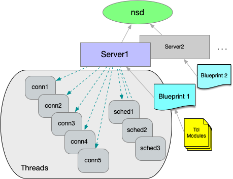

NaviServer Manual – 5.0.4
admin-config - NaviServer Configuration Guide
When NaviServer is started, typically a configuration file is provided containing certain settings for the server. The configuration file includes network configuration options, log file information, loading of modules and database drivers and the like. Actually, the configuration file can contain the definition of multiple servers, running concurrently or depending on command line arguments also separately (see admin-maintenance).
The NaviServer configuration file consists of multiple sections containing global configuration of the instance and sections for each server and module. The configuration file is actually a Tcl script, such that at user can set variables, defined procs to avoid repeated patterns and the like. Tcl variables are typically used to certain parameters at the beginning of the file, which might be often changed. This eases the maintenance.
The following sample configuration files might be used as a starting point for site specific configurations:
Several configuration hints and details can be found also in other places in the manual, such as e.g. in admin-tuning or for module specific parameters (which might not be necessary in every installation). Furthermore, the configuration mechanism of NaviServer is extensible, therefore, modules and applications can as well use the configuration file with its abstraction to define application specific parameters. So, a listing of the parameters can never complete. In this page, we primarily define introductory examples for typical usage scenarios.
The main sections of a configuration file are:
Global configuration values
general parameters (section starting with ns/parameters)
thread parameters (section starting with ns/threads)
mimetypes (section starting with ns/mimetypes)
database drivers (section starting with ns/db)
global modules (section starting with ns/modules)
servers (section starting with ns/servers)
Examples for global parameters are in the mentioned sample configuration files and also, e.g., in tcl-libraries and admin-tuning.
Server specific parameters (section starting with ns/server/$server), where $server is either a Tcl variable with the server configuration name, or should be replaced by the actual name (typically, when multiple server configurations are used).
Module specific parameters (like nssock, nsssl, nscp, nslog, nscgi or nsperm).
In general, when modifying configuration files, it is always a good idea to check whether a configuration file is syntactically correct before starting the server. This can reduce the downtime of a production server in case of typos. A configuration file named nsd-config.tcl can be checked with the command line option -T of NaviServer.
/usr/local/ns/bin/nsd -t nsd-config.tcl -T
The global parameters contain the basic setup information, where for example the root of the root of nsd is, where the server log is to be written, or whether the server runs behind a proxy server or not.
ns_section ns/parameters {
ns_param home /var/www/myserver/
ns_param tcllibrary tcl
ns_param systemlog nsd.log
# ...
ns_param reverseproxymode true
}
When reverse proxy mode is turned on, the server assumes it is running behind a reverse proxy server. In this case, commands referring to the client IP address will return on default the value as provided by the reverse proxy server (i.e. provided via the x-forwarded-for header field). This will affect the results of ns_conn peeraddr and various introspection commands.
Below, we address some general design considerations when tailoring your one configuration files. Check for simple or real-live setups of larger installations by the provided sample configuration files.
One of the core components of the configuration file are the network drivers: what protocols should be used, on which addresses/ports should be used, or how to set up virtual servers. The most important network drivers of NaviServer are nssock (for HTTP connections) and nsssl (for HTTPS connections).
Several additional network drivers are available via extra modules, such as e.g. nsudp, nssmtpd (for a full list of modules, see the module repository).
In the simplest case, one defines in a configuration file a single server s1 with a single network driver nssock used for plain HTTP connections. In the example below, the server is listening on port 8000.
ns_section ns/servers {
ns_param s1 "Server Instance 1"
}
ns_section ns/server/s1/modules {
ns_param http nssock.so
}
ns_section ns/server/s1/module/http {
ns_param address 0.0.0.0
ns_param port 8000
}
In this example, the module nssock is loaded for the server "s1" under the name "http". We show, in later examples, how to load a network driver globally, such that one network driver can be used for multiple servers.
It is as well possible to define multiple server configurations in the same configuration file (here s1 and s2). IN the following example these servers use the same driver nsock but with different ports. In this case, it is sufficient to load the driver once.
ns_section ns/servers {
ns_param s1 "Server Instance 1"
ns_param s2 "Server Instance 1"
}
#
# Server s1
#
ns_section ns/server/s1/modules {
ns_param http nssock.so
}
ns_section ns/server/s1/module/http {
ns_param address 0.0.0.0
ns_param port 8000
}
#
# Server s2
#
ns_section ns/server/s2/modules {
ns_param http nssock.so
}
ns_section ns/server/s2/module/http {
ns_param address 0.0.0.0
ns_param port 8001
}
When the configuration file above is named e.g., two-server-config.tcl, the two servers can be started with a command line like:
/usr/local/ns/bin/nsd -u nsadmin -t two-server-config.tcl -f
When it is the goal to start only one of these servers, one can use e.g. the following command:
/usr/local/ns/bin/nsd -u nsadmin -t two-server-config.tcl -f -server s2
Often, a server has the requirement to listen on multiple addresses, such as on one (or many) IPv4 and one (or many) IPv6 addresses. This can be addressed by simply providing the list of values as a parameter value.
ns_section ns/servers {
ns_param s1 "Server Instance 1"
}
ns_section ns/server/s1/modules {
ns_param http nssock.so
}
ns_section ns/server/s1/module/http {
ns_param address "137.208.116.31 2001:628:404:74::31"
ns_param port 8000
}
Similarly, we can define a single server, listening on multiple ports. In this case, one can load multiple instances of the driver, where each of the driver listens on a different port.
#
# Server s1, using listening on two ports
#
ns_section ns/server/s1/modules {
ns_param http nssock.so
}
ns_section ns/server/s1/module/http {
ns_param address 0.0.0.0
ns_param port "8000 8001"
}
When multiple IP addresses and multiple ports are specified, the server will be listening for every specified address on every specified port. In the following example, it will listen on four different combinations of addresses and ports.
ns_section ns/server/s1/module/http {
ns_param address "137.208.116.31 2001:628:404:74::31"
ns_param port "8000 8001"
}
In the last two examples, a single server is listening on different ports and or IP addresses, but the configuration of the driver was otherwise identical. In case, different driver parameters are needed, it is possible to load the same driver multiple times for the same server with different driver names. In the following example, we name the different instances of the network driver http1 and http1.
#
# Server s1, using two drivers for listening on two ports on two
# different addresses.
#
ns_section ns/server/s1/modules {
ns_param http1 nssock.so
ns_param http2 nssock.so
}
ns_section ns/server/s1/module/http1 {
ns_param address 0.0.0.0
ns_param port 8000
}
ns_section ns/server/s1/module/http2 {
ns_param address 127.0.0.1
ns_param port 8001
}
It would be as well possible to register multiple addresses for every network driver instance (here "http1" and "http2"). In general, by loading a network driver multiple times, all the of parameters of the driver modules (here nssock) can be modified per driver instance.
Virtual servers allow you to host multiple, distinct server configurations on the same IP address and port. Unlike defining alternative server configurations that are activated one at a time (what we have done above), virtual servers coexist concurrently. When a request arrives, NaviServer examines the HTTP/1.1 Host: header to select the matching virtual server configuration.
A common use case is serving the same content under several DNS names (e.g. foo.com and www.foo.com) using the same server configuration. To enable this, list each hostname under the ns/module/http/servers section, mapping names to a single server instance.
ns_section ns/servers {
ns_param s1 "Virtual Instance 1"
}
ns_section ns/modules {
ns_param http nssock.so
}
ns_section ns/module/http {
ns_param address 0.0.0.0
ns_param port 8000
}
#
# Map DNS names to the s1 server configuration
#
ns_section ns/module/http/servers {
#
# Domain names for s1
#
ns_param s1 foo.com
ns_param s1 www.foo.com
}
In the example above, a single server instance "s1" responds to both foo.com and www.foo.com. You can also define multiple server configurations, each with its own thread pool, document root, loaded modules, and network driver by adding additional entries in ns/servers and corresponding ns/module/http/servers mappings. By doing so, you can define that a certain set of DNS names are routed to one server and some to another server (see Figure 1).

Figure 1: NaviServer Blueprint (per server)
When NaviServer is started, it reads first the configuration file, which contains the definition of all servers, and then, it creates and configures the virtual servers based on this information. This is also the reason, why certain (server-specific) commands cannot be contained (and executed) in the configuration file (e.g., registering URL handlers, callbacks, etc.), but can be loaded from the module files (see also tcl-libraries.html). Additionally, it is possible to specify server specific commands in the section ns/server/SERVERNAME/tcl with the parameter initcmds (see also tcl-libraries.html).
Note that it is also possible to define virtual servers with a single NaviServer server definition, but this will be covered later.
In the following example, we define two separate servers "s1" and "s2", which should act as virtual web servers. This means, we want to define one network driver, which listens on a single port, but which should direct requests to one of the two potentially differently configured servers based on the content of the host header field.
Assume for the IP address of the server the DNS names foo.com, bar.com and baz.com are registered. We define server "s1" and "s2" such that "s1" should receive requests from foo.com, and "s2" should receive requests from bar.com and baz.com. Servers "s1" and "s2" have different pagedir definitions.
For defining virtual servers, the network driver has to be loaded globally (i.e., as module ns/module/http). For requests with missing/invalid host header fields, we have to define a defaultserver to handle such requests in the global definition. In the section ns/module/http/servers we define the mapping between the hostnames and the defined servers.
#
# Define two servers s1 and s2 as virtual servers
#
ns_section ns/servers {
ns_param s1 "Virtual Server s1"
ns_param s2 "Virtual Server s2 "
}
ns_section ns/server/s1/fastpath {
ns_param pagedir /var/www/s1
}
ns_section ns/server/s2/fastpath {
ns_param pagedir /var/www/s2
}
#
# Define a global nssock driver named "http",
# directing requests to the virtual servers
# based on the "Host:" header field.
#
# It is necessary to define a "defaultserver"
# for requests without a "Host:" header field.
#
ns_section ns/modules {
ns_param http nssock.so
}
ns_section ns/module/http {
ns_param port 8000
ns_param defaultserver s1
}
#
# Define the mapping between the DNS names and the servers.
#
ns_section ns/module/http/servers {
#
# Domain names for s1
#
ns_param s1 foo.com
#
# Domain names for s2
#
ns_param s2 bar.com
ns_param s2 baz.com
}
Note that one can define multiple DNS names also for a single server. With the definition above, "s1" serves foo.com and "s2" serves bar.com and baz.com. Since "s1" is the default server, requests with unregistered hostnames will also be directed to it.
In general, the logic of the definition of servers and network drivers is the same for HTTP (driver nssock) and HTTPS (driver nsssl), except that the latter has some additional configuration parameters, such as e.g. the certificate, or a special configuration of the ciphers, etc.
In order to define virtual servers with HTTPS, one can essentially use the definition of the previous section, and load as well the nsssl driver globally with the name "https", and configure it accordingly.
#
# Define a global nsssl driver named https
#
ns_section ns/modules {
ns_param https nsssl.so
}
ns_section ns/module/https {
ns_param port 8433
ns_param defaultserver s1
ns_param certificate /usr/local/ns/modules/https/server.pem
}
ns_section ns/module/https/servers {
ns_param s1 foo.com
ns_param s2 bar.com
ns_param s2 baz.com
}
However, this case requires that all accepted hostnames are listed in the certificate. Such certificates are called multi-domain SAN certificates.
However, there might be cases, where a server listening on a single address has to provide different certificates for e.g. "foo.com" and "bar.com". For virtual hosting, this is a chicken-egg problem: the right certificate is needed at the time the connection is opened, but the virtual server can be only detected while reading the request header.
This is a well-known problem, for which the SNI TLS extension was invented (a hostname that can be used for identifying the certificate is passed during the TLS handshake as well).
In order to configure SNI (Server Name Indication) for HTTPS, one can simply add additional certificates for the server needed. In the following example the default certificate is defined on the level of the global driver (server.pem), whereas the certificate for the server "foo.com" (which will be served by "s1") is defined for the server "s1" separately (foo.com.pem).
#
# Define a global nsssl driver named "https"
#
ns_section ns/modules {
ns_param https nsssl.so
}
ns_section ns/module/https {
ns_param port 8433
ns_param defaultserver s1
ns_param certificate /usr/local/ns/modules/https/server.pem
}
ns_section ns/module/https/servers {
ns_param s1 foo.com
ns_param s2 bar.com
ns_param s2 baz.com
}
#
# Define a server-specific certificate to enable SNI.
# Furthermore, activate for server "s1" also OCSP stapling.
#
ns_section ns/server/s1/module/https {
ns_param certificate /usr/local/ns/modules/https/foo.com.pem
ns_param OCSPstapling on
ns_param OCSPcheckInterval 5m
}
OCSP (abbreviation of Online Certificate Status Protocol, RFC 2560 and RFC 6066) is a protocol that checks the validity status of a certificate. The term OCSP stapling refers to the use of digitally-signed time-stamped OCSP responses in the web server for performance reasons. In the example above, OCSP stapling is defined for server "s1". The parameter OCSPcheckInterval defines the interval for re-checking the validity of a certificate.
The virtual servers defined in the last sections have the disadvantage that these require to know the server upfront, to include the server definition in the configuration file. Therefore, adding another virtual server requires a restart which is quick, but still, will interrupt services. In case, the virtual hosts are very similar, it is possible to define a single virtual server hosting multiple domains, serving e.g. from different page directories.
The following example defines server "s1" serving only for HTTP connections over port 8000. The new part is the registration of a callback via ns_serverrootproc, which determines the root directory for serving pages based on the "host:" header field. The definition assumes a directory structure like the following, where "foo.com" has, e.g., a different index.html file.
/var/www/ ├── default │ └── index.html ├── foo.com │ └── index.html ...
When the content of the host header field is found in the filesystem under /var/www, it is used as the pageroot for this request.
#
# Define server "s1"
# - listening on all IP addresses,
# - port 8000,
# - serve pages from /var/www/
#
ns_section ns/servers {
ns_param s1 "Sample Server"
}
ns_section ns/server/s1 {
ns_param serverdir /var/www
ns_param serverrootproc {
#
# Register callback for computing the per-request "serverdir":
#
set rootDir [ns_server serverdir]
set host [ns_conn host ""]
if {$host ne "" && [file isdirectory $rootDir/$host ]} {
#
# A "host" header field was provided in the request, and a matching
# folder exists in the filesystem -> use it as "serverdir"
#
set serverDir $rootDir/$host
} else {
set serverDir $rootDir/[ns_info server]
ns_log notice "... $rootDir/$host does not exist, use default '$serverDir'"
}
return $serverDir
}
}
ns_section ns/server/s1/modules {
ns_param http nssock.so
}
ns_section ns/server/s1/module/http {
ns_param address 0.0.0.0
ns_param port 8000
}
ns_section ns/server/s1/fastpath {
ns_param pagedir ""
}
With this approach additional domains can be added at runtime of NaviServer by adding new directories for them.
While the previous section works for mass virtual hosting with plain HTTP, the usage of HTTPS requires certificates, where multi-domain SAN certificates can't be used, since mass hosting is supposed to work without server restart. One cannot anticipate the domain names, which are added.
Starting with NaviServer 5, it is possible to specify a directory containing individual certificates for virtual hosts with the parameter vhostcertificates in the nsssl module definition. When NaviServer receives a request with an SNI hostname, it will search in this directory at runtime for a certificate file with the name based on the SNI hostname, where ".pem" was added
set serverroot /var/www
set address 0.0.0.0
set httpsport 443
ns_section ns/server/s1/module/https {
ns_param address $address
ns_param port $httpsport
ns_param certificate $serverroot/default.pem
ns_param vhostcertificates $serverroot
}
Note that in this setup only a single server configuration is needed (in the example above, the server "s1"). Together with the definition of the serverrootproc callback, it will provide mass virtual hosting over HTTPS. Below is a minimal setup showing the directory structure for serving dotlrn.net via this mechanism. Note the certificates dotlrn.net.pem, example.com.pem, and default.pem at the top level directory and their respective subdirectories from where the websites are served. Any request with a different host than example.com or dotlrn.net will be served from the default directory with the default.pem certificate.
/var/www/ ├── default │ └── index.html ├── example.com.pem ├── example.com │ └── index.html ├── dotlrn.net.pem ├── dotlrn.net │ ├── index.html │ └── test │ └── file └── default.pem
It is a common requirement to redirect incoming traffic from HTTP to HTTPS. When a user has connected once via HTTPS, it is recommended to use HSTS (HTTP strict-transport-security) to cause the browser to stay on the secure connection. This is recommended to avoid certain man-in-the-middle attacks.
One simple approach to do this is to define a server configuration listening on the HTTP port that redirects requests to the HTTPS port. In the following example, this server configuration is called "redirector". It accepts requests for HTTP on port 80, and redirects all GET requests to the same server to HTTPS (port 443). This approach can be used for all described virtual host configurations.
#
# Simple redirecting server
#
ns_section ns/servers {
ns_param redirector "Redirecting Server"
}
ns_section ns/server/redirector/modules {
ns_param http nssock.so
}
ns_section ns/server/redirector/module/http {
ns_param address 0.0.0.0
ns_param port 80
}
ns_section ns/server/redirector/tcl {
ns_param initcmds {
#
# Register an HTTP redirect for every GET request.
#
ns_register_proc GET /* {
set host [ns_conn host localhost]
ns_returnmoved https://$host:443[ns_conn target]
}
}
}
For certain sites, it is desired that HTTP request to some paths should be excluded from the HTTPS redirection. E.g., Let's Encrypt requires requests over plain HTTP to the directory /.well-known for certificate management requests (see RFC 8615 and https://letsencrypt.org/docs/challenge-types/).
In order to exclude this directory from the general redirection register the /.well-known target via ns_register_fastpath:
ns_section ns/server/redirector/tcl {
ns_param initcmds {
#
# Register an HTTP redirect for every GET request.
#
ns_register_proc GET /* {
set host [ns_conn host localhost]
ns_returnmoved https://$host:443[ns_conn target]
}
#
# Let requests for /.well-known get through. Remember to
# define page root, logging etc. for this server configuration.
#
ns_register_fastpath GET /.well-known
}
}
For security reasons, it is a common requirement to provide additional header fields to the responses of a server. For scripted pages, such additional header fields can be added depending on the needs of these pages (e.g., by providing page specific CSP policies). However, there are as well requirements for adding response header fields for all requests. The following response header fields are often recommended:
x-frame-options "SAMEORIGIN" x-content-type-options "nosniff" x-xss-protection "1; mode=block" referrer-policy "strict-origin"
or for HTTPS requests
strict-transport-security "max-age=31536000; includeSubDomains"
or, e.g., CSP rules on static pages to address the security threads of SVG files.
In the NaviServer configuration file, one can specify extra response header files for drivers and/or for servers, as the following example shows. The specified header files are merged together. In case, the same header field is provided at the level of the driver and the server, the more specific (i.e., the server-specific) value is used.
ns_section ns/servers {
ns_param s1 "Server s1"
}
ns_section ns/modules {
ns_param http nssock.so
ns_param https nsssl.so
}
ns_section ns/module/http {
ns_param address localhost
ns_param port 8081
#
# Driver-specific extra response header fields for HTTP requests
#
ns_param extraheaders {
X-driver-extra http
X-extra driver-http
}
}
ns_section ns/module/https {
ns_param address localhost
ns_param port 8441
ns_param certificate /var/www/default.pem
#
# Driver-specific extra response header fields for HTTPS requests
#
ns_param extraheaders {
X-driver-extra https
X-extra driver-https
}
}
ns_section ns/server/s1/fastpath {ns_param pagedir /var/www/s1}
ns_section ns/server/s1/adp {ns_param map "/*.adp"}
#
# Server-specific extra response header fields for all requests to
# this server.
#
ns_section ns/server/s1 {
ns_param extraheaders {
X-server-extra s1
X-extra server-s1
}
}
When the configuration above is used, all requests via HTTPS will be served with the following extra response header fields.
X-driver-extra https X-server-extra s1 X-extra server-s1
The sections above explain how to configure server certificates when NaviServer handles incoming HTTPS connections (see parameters certificate and vhostcertificates). In contrast, this section focuses on cases where NaviServer acts as an HTTPS client - for example, when it performs web service requests or manages infrastructure and administrative tasks over HTTPS. Historically, some systems and libraries have been configured to disable certificate validation entirely (see e.g., The Most Dangerous Code), leaving them vulnerable to man-in-the-middle attacks.
In NaviServer, client-side certificate management (for outgoing HTTPS connections) is configured in the per-server httpclient section of the server configuration. While above examples refers to server names like s1 or s2, any valid server name can be used.
This httpclient section also includes parameters for managing keep-alive behavior and logging for outgoing requests. In this subsection, we focus on certificate management and security-related settings.
The most important parameter is validateCertificates, which defaults to true. This is the recommended setting and protects against man-in-the-middle attacks by rejecting forged or otherwise invalid certificates. Nonetheless, internal or development servers often use self-signed or expired certificates, leading to request failures under strict validation. This likely explains why NaviServer 4.x was historically permissive by default.
#---------------------------------------------------------------------
# HTTP client (ns_http, ns_connchan) configuration
#---------------------------------------------------------------------
ns_section ns/server/$server/httpclient {
# Set default keep-alive timeout for outgoing ns_http requests.
...
#
ns_param validateCertificates true ;# default: true
...
# ... additional validation settings ...
...
# Configure log file for outgoing ns_http requests
...
}
In NaviServer 5, you can specify the default location of trusted certificates:
CAfile references a single file with trusted root certificates (commonly ca-bundle.crt)]
CApath references a directory containing multiple trusted certificates]
Both parameters map directly to OpenSSL settings. Whenever new certificates are added to CApath, you must run openssl rehash for OpenSSL to recognize them on subsequent requests.
You can further control the depth of certificate validation using validationDepth:
0 means accepting only self-signed certificates]
1 means certificates are issued by at most one CA or are self-signed
2 or higher means certificate chains up to that length are allowed
Use validationException to define exceptions for specific validation errors (e.g., certificate-expired or self-signed-certificate) from certain IP addresses or CIDR ranges. Multiple rules can be defined, each possibly including:
ip: The IP address or CIDR range. If omitted, the rule applies to all hosts.
accept: A list of validation errors to allow, or * to allow all. If omitted, the default is accept *.
For example:
ns_param validationException {
ip 127.0.0.1
accept {certificate-expired self-signed-certificate}
}
The sample httpclient configuration below contains several examples.
Acceptance rules do not replace CApath or CAfile, but help simplify certificate management. Administrators can manually consolidate rejected certificates into the CA path, but doing so can be laborious when they reside in multiple administrative domains.
Whenever an acceptance rule is applied, NaviServer stores the flagged certificate in a directory for invalid certificates and logs an entry to the system log. By default, this directory is named invalid-certificates, though you can specify an alternative name or path via invalidCertificates. This mechanism allows administrators to review such certificates later for potential manual handling or auditing.
A recejected certificate can be examined with:
openssl x509 -in CERT.PEM -noout -text
Below is a sample httpclient configuration illustrating certificate validation and exception rules:
#---------------------------------------------------------------------
# HTTP client (ns_http, ns_connchan) configuration
#---------------------------------------------------------------------
ns_section ns/server/$server/httpclient {
#
# Set default keep-alive timeout for outgoing ns_http requests.
# The specified value determines how long connections remain open for reuse.
#
ns_param keepalive 5s ;# default: 0s
#
# If you wish to disable certificate validation for "ns_http" or
# "ns_connchan" requests, set "validateCertificates" to "false".
# However, this is NOT recommended, as it significantly increases
# vulnerability to man-in-the-middle attacks.
#
#ns_param validateCertificates false ;# default: true
if {[ns_config ns/server/$server/httpclient validateCertificates true]} {
#
# The following parameters are only relevant when peer certificate
# validation is enabled.
#
# Specify trusted certificates using
# - A single CA bundle file (CAfile) for top-level certificates, or
# - A directory (CApath) containing multiple trusted certificates.
#
# These default locations can be overridden per request in
# "ns_http" and "ns_connchan" requests.
ns_param CApath certificates ;# default: [ns_info home]/certificates/
ns_param CAfile ca-bundle.crt ;# default: [ns_info home]/ca-bundle.crt
#
# "validationDepth" sets the maximum allowed length of a certificate chain:
# 0: Accept only self-signed certificates.
# 1: Accept certificates issued by a single CA or self-signed.
# 2 or higher: Accept chains up to the specified length.
#ns_param validationDepth 0 ;# default: 9
#
# When defining exceptions below, invalid certificates are stored
# in the specified directory. Administrators can move these
# certificates to the accepted certificates folder and run "openssl rehash"
# to reduce future security warnings.
#ns_param invalidCertificates ;# default: [ns_info home]/invalid-certificates/
#
# Define white-listed validation exceptions:
#
# Accept all certificates from ::1 (IPv6 loopback):
ns_param validationException {ip ::1}
# For IPv4 127.0.0.1, ignore two specific validation errors:
ns_param validationException {ip 127.0.0.1 accept {certificate-expired self-signed-certificate}}
# Allow expired certificates from any IP in the 192.168.1.0/24 range:
ns_param validationException {ip 192.168.1.0/24 accept certificate-expired}
# Accept self-signed certificates from any IP address:
ns_param validationException {accept self-signed-certificate}
# Accept all validation errors from any IP address (like disabled validation, but collects certificates)
#ns_param validationException {accept *}
}
#
# Configure log file for outgoing ns_http requests
#
ns_param logging on ;# default: off
ns_param logfile httpclient.log ;# default: [ns_info home]/logs/httpclient.log
ns_param logrollfmt %Y-%m-%d ;# format appended to log filename
#ns_param logmaxbackup 100 ;# 10, max number of backup log files
#ns_param logroll true ;# true, should server log files automatically
#ns_param logrollonsignal true ;# false, perform log rotation on SIGHUP
#ns_param logrollhour 0 ;# 0, specify at which hour to roll
}
Transitioning to certificate validation:
Switching from a configuration with certificate validation disabled to one with validation enabled can initially result in many failures, especially if various services rely on self-signed or otherwise untrusted certificates. One approach is to enable validation but accept all validation failures. This allows the HTTPS connections to remain functional while NaviServer logs warnings and stores the rejected certificates, giving you the opportunity to address them individually.
ns_section ns/server/$server/httpclient {
...
ns_param validateCertificates true
ns_param validationException {accept *}
...
}
With these settings, any validation errors will be logged, and the invalid certificates will be saved:
... Warning: invalid certificate accepted (... self-signed certificate in certificate chain) ... Notice: saved invalid certificate: .../invalid-certificates/...-2-19.pem
Updating ca-bundle.crt:
Keeping your ca-bundle.crt file up to date ensures that your application trusts the newest certificate authorities (CAs) and rejects compromised or revoked certificates. Most operating systems and distributions offer automated updates via package managers (e.g., apt-get install ca-certificates on Debian/Ubuntu or ca-certificates RPM packages on Fedora/RHEL).
Alternatively, you can manually download and replace your CA bundle, often derived from Mozilla’s trusted CA list. Whenever you update ca-bundle.crt, verify its integrity (e.g., via checksums). You might consider to schedule these updates (e.g., through ns_schedule).
NaviServer can be configured additionally as a classical "forward" HTTP proxy server, and/or as a reverse proxy server. As described above, NaviServer can be configured to run behind a reverse proxy server, which has consequences on determining, e.g., the client's peer IP address and logging. The configuration for running behind a reverse proxy server was described in the section Server Network Configuration.
A forwarding proxy server handles outbound traffic on behalf of clients, shielding the client’s identity or controlling outbound traffic. This is different from a reverse proxy server, which is managing traffic towards internal servers. A reverse proxy server receives HTTP requests from outside and forwards these requests to some internal servers (backend servers), which are typically not reachable directly from the clients.
For the configuration as a forwarding proxy server, the parameter enablehttpproxy must be activated. It is also recommended to load the revproxy module to since this contains a scaling infrastructure for proxy requests. If the module is not activated, a simple fallback is used.
ns_section ns/server/s1 {
...
ns_param enablehttpproxy true
...
}
ns_section ns/server/s1/modules {
ns_param revproxy tcl
}
For the activation and configuration of NaviServer as a reverse proxy server, see the revproxy configuration.
More to come here...
In many situations, NaviServer returns dynamically generated content that is not directly provided by users. Examples include error messages, directory listings, or notices generated by commands such as ns_returnnotice. Administrators can customize these system-generated responses to enhance security and maintain a consistent appearance.
The configuration parameter noticeDetail in the server section determines whether server name and version information are included in these responses. Exposing such details may aid attackers by revealing information about the server and its software version.
Similarly, the stealthMode parameter controls whether the Server: header is sent in HTTP responses. When stealthMode is set to true, the Server: header is omitted, reducing the information available to potential attackers.
ns_section ns/server/s1 {
# ...
#ns_param noticeDetail false ;# Exclude server name and version from system responses
#ns_param stealthMode false ;# Omit the Server header in HTTP responses
# ...
}
The appearance of system-generated HTTP responses can be customized using an ADP template, typically located at SERVERHOME/conf/returnnotice.adp. This template receives the variables title, notice, and noticedetail to render the response. For a consistent look when using custom themes, you can specify an alternative template via the noticeADP parameter in the server configuration (e.g., for server s1).
ns_section ns/server/s1 {
# ...
#ns_param noticeADP returnnotice.adp ;# Specify the ADP file for ns_returnnotice responses
# ...
}
If the noticeadp value is not an absolute path, it is assumed to reside in SERVERHOME/conf/. When set to an empty string, the module falls back to a hard-coded template. In cases where the custom template causes an error, a basic built-in template is used as a fallback.
In addition to the basic template, you can define custom error pages for specific HTTP status codes. This allows you to provide tailored messages for errors such as 404, 403, 503, and 500. In the following example configuration, these are residing in a directory shared.
#---------------------------------------------------------------------
# Special HTTP Pages
#---------------------------------------------------------------------
ns_section ns/server/s1/redirects {
ns_param 404 /shared/404
ns_param 403 /shared/403
ns_param 503 /shared/503
ns_param 500 /shared/500
}
A typical NaviServer installation follows a basic directory structure similar to the example below:
HOME /usr/local/ns/ BINDIR /usr/local/ns/bin/ LOGDIR /usr/local/ns/logs/ TCLLIBDIR /usr/local/ns/tcl/
The root directory (home) is determined at compile time, but all of these paths can be modified via the configuration file. For instance, the default settings are defined as:
ns_section ns/parameters {
ns_param home /usr/local/ns/
ns_param logdir logs
ns_param tcllibrary tcl
ns_param bindir bin
}
For all paths except home, you may specify either absolute or relative names. Absolute paths are used as given, whereas relative paths in the ns/parameters section are resolved relative to the value of home.
Beyond the global configuration, you can define server-specific file location settings by specifying a serverdir that acts as the root for that server’s log and page directories.
The key parameters for per-server file locations are:
serverdir: Defines the root directory for a server’s log and page directories. A relative serverdir is resolved against home. By default, serverdir is empty, meaning the global home is used.
Alternatively, a serverrootproc callback can dynamically compute the server directory per request (e.g., based on the "Host:" header).
logdir: Specifies the directory for log files (e.g., access.log or httpsclient.log). The value can be given as an absolute path or a relative path, in which case it is resolved against serverdir. Note that a log directory specified for a particular server takes precedence over the global configuration.
pagedir: Specifies the directory from which page requests are served. Like logdir, this may be absolute or relative (resolved against serverdir).
ns_section ns/server/SERVER1 {
ns_param serverdir ""
#ns_param serverrootproc ...
ns_param logdir logs
}
ns_section ns/server/SERVER1/fastpath {
ns_param pagedir pages
}
You can specify the locations of Tcl source files on a per-server basis. In the per-server tcl section, the initfile parameter defines the Tcl initialization file to be executed during server startup, and the library parameter specifies the directory containing additional Tcl scripts to be loaded. Both parameters may be given as absolute paths or as relative paths (resolved against home).
ns_section ns/server/SERVER1/tcl {
ns_param initfile bin/init.tcl
ns_param library modules/tcl/
}
NaviServer maintains a single system log (by default nsd.log) that aggregates system and application messages via ns_log. In addition, each server can have its own log files, such as access.log (managed by the nslog module) or httpclient.log (configured in the httpclient section). All per-server log files can be automatically rotated by enabling the boolean rolllog parameter in the section where the logfile is defined.
For instance, the snippet below defines automated rolling for the access log along with the other relevant parameters controlling this log file:
ns_section ns/server/SERVER1/modules {
ns_param nslog nslog
}
ns_section ns/server/SERVER1/module/nslog {
# ns_param file access.log
ns_param rolllog true
#
# ns_param suppressquery true ;# false, suppress query portion in log entry
# ns_param logreqtime true ;# false, include time to service the request
ns_param logpartialtimes true ;# false, include high-res start time and partial request durations
ns_param logthreadname true ;# default: false; include thread name for linking with nsd.log
# ns_param formattedtime true ;# true, timestamps formatted or in secs (unix time)
# ns_param logcombined true ;# true, Log in NSCA Combined Log Format (referer, user-agent)
ns_param masklogaddr true ;# false, mask IP address in log file for GDPR (like anonip IP anonymizer)
ns_param maskipv4 255.255.255.0 ;# mask for IPv4 addresses
ns_param maskipv6 ff:ff:ff:ff:: ;# mask for IPv6 addresses
# ...
# ns_param maxbackup 100 ;# 10, max number of backup log files
# ns_param rollhour 0 ;# 0, specify at which hour to roll
# ns_param rollonsignal true ;# false, perform log rotation on SIGHUP
# ns_param rollfmt %Y-%m-%d ;# format appended to log filename
}
While the accesslog is activated, when the nslog module is loaded and the full section is just for configuring this particular access log.
the situation for the httpclient log is slightly different. Here, no extra module has to be loaded, but the logging is turned on via the logging parameter. Since the httpclient section is used for multiple purposes concerning HTTP client requests, the parameters are prefixed with log to avoid potential confusions.
The snippet below defines automated rolling for the httpclient log along with the other relevant parameters controlling this log file:
ns_section ns/server/SERVER1/httpclient {
# ...
# ns_param logfile httpclient.log
ns_param logging on ;# default: off
ns_param logroll true ;# true, roll log files automatically
#
# ns_param logmaxbackup 100 ;# 10, max number of backup log files
# ns_param logrollhour 0 ;# 0, specify at which hour to roll
# ns_param logrollonsignal true ;# false, perform roll on SIGHUP
# ns_param logrollfmt %Y-%m-%d ;# format appended to log filename
# ...
}
For the system log, there is no no dedicated configuration parameter to control automatic rotation of the system log. Automated log rotation can be achieved via a scheduled procedure, as shown in the following snippet, which uses ns_schedule_daily to call ns_log every day at midnight.
ns_schedule_daily 0 0 ns_logroll
In configurations employing mass virtual hosting, a single server may generate multiple access log files and httpclient log file (one for every virtual server). In such cases, the serverrootproc callback dynamically computes the appropriate serverdir to resolve relative log file paths. In this case, log rotation is applied to all log files configured for that server. Note that only actively used (open) log files are subject to rotation.
By default, log files are rolled by appending a numerical suffix indicating their age. Alternatively, you can specify a custom roll format for all log files. For example, setting rollfmt to %Y-%m-%d causes the log rotation process to append the actual date instead of a number. This method offers the advantage of stable log filenames after rolling, which may simplify long-term log management and reduces backup requirements.
The following nipped shows the parameters for customizing the system log.
ns_section ns/parameters {
# ...
# ns_param logdir log
# ns_param systemlog nsd.log
# ns_param logrollonsignal on ;# enable log rotation on SIGHUP
ns_param logmaxbackup 100 ;# 10 is default
ns_param logrollfmt %Y-%m-%d ;# format appended to system log filename when rolled
# ns_param logsec false ;# add timestamps in second resolution (default: true)
# ns_param logusec true ;# add timestamps in microsecond (usec) resolution (default: false)
# ns_param logusecdiff true ;# add timestamp diffs since in microsecond (usec) resolution (default: false)
# ns_param logthread false ;# add thread-info the log file lines (default: true)
# ns_param logcolorize true ;# colorize log file with ANSI colors (default: false)
# ns_param logprefixcolor green ;# black, red, green, yellow, blue, magenta, cyan, gray, default
# ns_param logprefixintensity normal;# bright or normal
# ns_param sanitizelogfiles 2 ;# default: 2; 0: none, 1: full, 2: human-friendly, 3: 2 with tab expansion
# ...
}
Complex pages with deep call stacks may require an increased per-thread stack size to avoid unexplained crashes. Although Tcl crashes from stack overflows are often due to operating system limits rather than Tcl itself, increasing the stack size can provide additional safety.
The per-thread stack size is configured via the stacksize parameter in your configuration file. The default value (e.g., 64kB) is typically insufficient for demanding applications; for example, OpenACS deployments use typically a stack size of 1MB.
#
# Thread library (nsthread) parameters
#
ns_section ns/threads {
ns_param stacksize 1MB ;# default: 64kB; Per-thread stack size.
}
ADP, CAfile, CApath, HTTPS, OCSP, SNI, SO_REUSEPORT, TCP, TCP_FASTOPEN, TLS, behind reverse proxy, certificate, configuration, connection thread pools, driver, forwarding proxy, initcmds, invalid-certificates, letsencrypt, logdir, logging, module, network driver, noticeDetail, nssock, nsssl, pagedir, performance, proxy, redirect, reverse proxy, reverseproxymode, scheduled procedures, serverdir, stealthMode, systemlog, templates, tuning, vhostcertificates